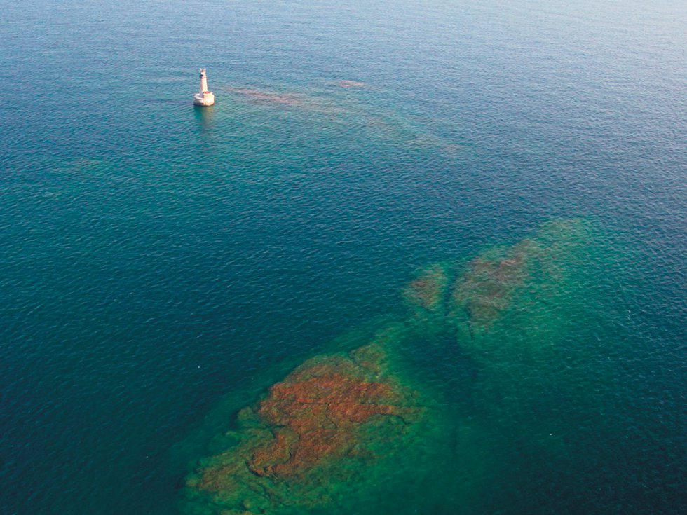
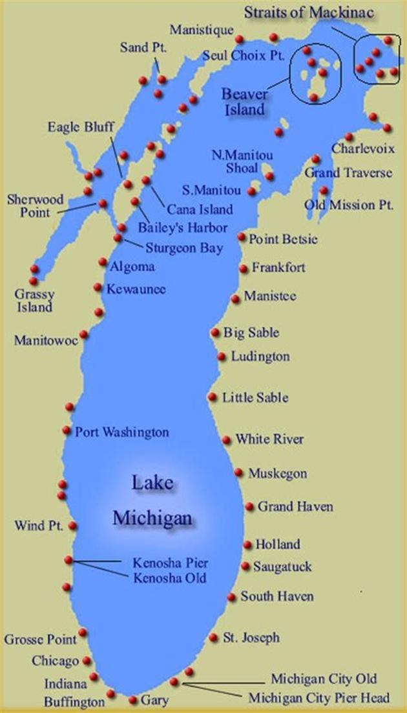
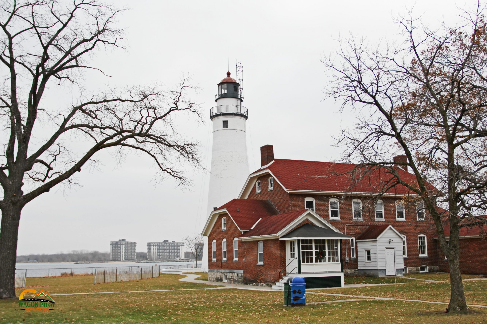

Home
Learning Check
What did you learn in the previous page?
Which U.S. state has the most lighthouses?
Click on one of the following choices
Minnesota
Missouri
Michigan
Mississippi

Located 24 miles from the nearest land, Stannard Rock Ligh stands on a reef that was the most serious hazard to navigation of which Lake?
Click on one of the following choices
Lake Michigan
Lake Superior
Lake Huron
Lake Ontario
Lake Erie

How many Lighthouses are located along Lake Michigan?
Click on one of the following choices
112 Lighthouses
129 Lighthouses
134 Lighthouses
102 Lighthouses

What year was the lighthouse in Fort Gratiot built?
Click on one of the following choices
1812
1825
1839
1802
